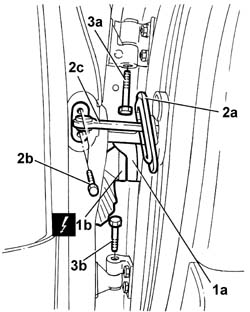
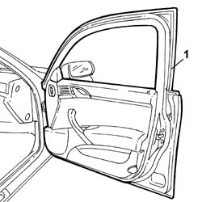

7210E36 front side door
- Path
- Procedures > 72 panels and frames > 7210 REMOVING REFITTING > 7210E EXTERNAL PARTS > 7210E36 front side door
- Kind
- repair procedure (removal / refitting; the operation number is the code)
- Applies to
- all engines; all production periods
- Interactive page
- https://sloeber94.github.io/elrnDB-lThss/en/#/80889
Applies to: all engines; all production periods
Applies to: all engines; all production periods
 Removing
Removing
 Refitting
Refitting- Disconnect the negative battery terminal.
1. Lift up the tab (1a) and disconnect the electrical connector (1b).
 | Description | Connector |
|---|---|---|
1b | Left front door coupling | D030 |
| Description | Connector |
|---|---|---|
1b | Right front door coupling | D031 |
2. Release the protection (2a) and undo the bolts (2b) fixing the door check strap (2c).
3. Undo the upper bolt (3a) and the lower bolt (3b) for the door hinges.

Applies to: all engines; all production periods
1. Detach the door and rest it on a suitable support.

Applies to: all engines; all production periods
Refitting
Removing- Check that the door is not damaged.
- If necessary, retouch the paintwork.
- Position the door and tighten the fixing bolts to torque.
 | Value - daNm | Fastening | Component | Ø |
|---|---|---|---|---|
. | (upper) 1.5 | Bolt | FRONT SIDE DOOR HINGES | M6 |
| Value - daNm | Fastening | Component | Ø |
|---|---|---|---|---|
. | (lower) 1.5 | Bolt | FRONT SIDE DOOR HINGES | M6 |
- Connect the electrical connector and close the sealing tab.
| Description | Connector |
|---|---|---|
. | Left front door coupling | D030 |
| Description | Connector |
|---|---|---|
. | Right front door coupling | D031 |
- Connect the negative battery terminal.